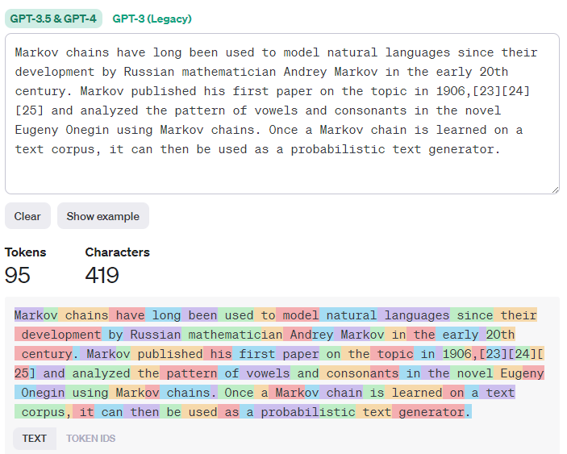

large language models
Overview
Large Language Model — A generative AI model that receives natural language text as input and generates text as output.
Components
- neural network
- parameters
- weights
- tuning
Input and Output
Prompts
The input of the large language model.
- A prompt may be an instruction specifying the type of output is expected of the model.
- Example instructions:
- Summarizing a text (“Summarize the following and extract insights”)
- Creative ideation and design (“Write an assignment for high school students including four open-ended questions about Louis XIV and his court”)
- Q&A (“Who is Louis XIV and why is he an important historical character?”)
- Writing assistance (“Louis XIV is an important historical character because…”)
- A unit of code to be created (“Create a Python function that sums two numbers”)
- Example instructions:
Context
The optional input that provides details to the prompt and, optionally, examples. Providing context is a form of prompt engineering.
Completion
The output of the large language model.
Tokenization
An LLM sees a prompt as a sequence of tokens. Different models (and even different versions of the same model) can tokenize a prompt differently. The way a prompt is tokenized has a marked impact on the quality of the completion.
Use OpenAI Tokenizer to visualize how a prompt is tokenized:

Instruction-Tuned LLM
An instruction-tuned LLM starts with the foundation model and tunes it with examples or input/output pairs. These are multi-turn messages that contain clear instructions. For example, consider this instruction which is provided to a model after some initial prompt: “Summarize content you are provided with for a second-grade student. Keep the result to one paragraph with 3-5 bullet points.”
How it Works
Tokenization
- A token is some arbitrary chunk of text.
- LLMs use a tokenizer to create arrays of tokens.
- Each token is then mapped with a token index — an integer encoding the original token.
Token prediction
- Given n tokens as input (with max n varying from one model to another), this model can predict one token as output.
- In the next iteration, the previous output token is incorporated.
- This is how LLMs generate multiple sentences.
Selection process
- The output token is chosen according to its probability of occurring after the current chunk of text.
- This is done by creating a probability distribution of all possible “next tokens” based on the model’s training.
- A degree of randomness is added which results in this process being non-deterministic.
- This degree of randomness is a tunable model parameter.
Types of LLMs [Documentation]
LLMs have different model types based on their architecture, training data, and use case. Underneath each type are different models.
| Model Type | Use Case |
|---|---|
| Whisper | Audio and speech recognition |
| DALL-E, Midjourney | Image generation |
| GPT-3.5, GPT-4 | Text generation |
Foundation Models [Documentation]
Foundation models are:
- trained using unsupervised learning or self-supervised learning
- very large (based on deep neural networks trained on billions of parameters)
- intended to serve as a foundation for other models
For example, GPT-3.5 served as the foundation model for ChatGPT-4.
Embedding vs. Image Gen vs. Text Gen vs. Code Gen
LLMs can also be categorized by the output they generate:
- Embeddings — models that can convert text into numerical form (called embedding).
- Image generation — models that generate new images or edit existing ones.
- Text generation — models that generate text
- Code generation — models that generate code
Encoder-only vs Encoder-Decoder vs Decoder-only
- Decoder-only models examine some input and generate output based on that input (like GPT-3). They are generative.
- Encoder-only models examine some input, examine some output, and identify the relationship between them (like BERT). They are not generative.
- Encoder-Decoder models do both (like BART and T5).
Development
LLMs can be developed through several different approaches:
- Prompt engineering with context — provide enough context in the prompt to get useful completions.
- Retrieval Augmented Generation (RAG) — fetching relevant data and make it part of the prompt.
- RAG augments prompts with external data in the form of chunks of documents.
- It allows the LLM to overcome the limitation of only being trained on static data.
- Fine-tuning — results in a new model being generated with updated weights and biases.
- Requires a set of training examples that consist of a single prompt and the associated output for each prompt.